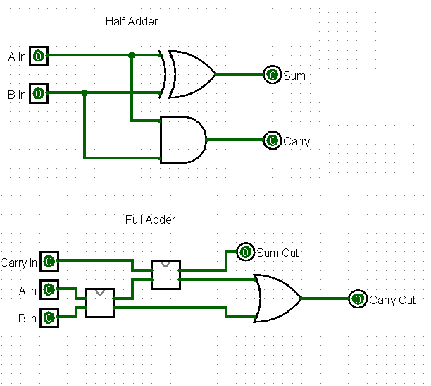
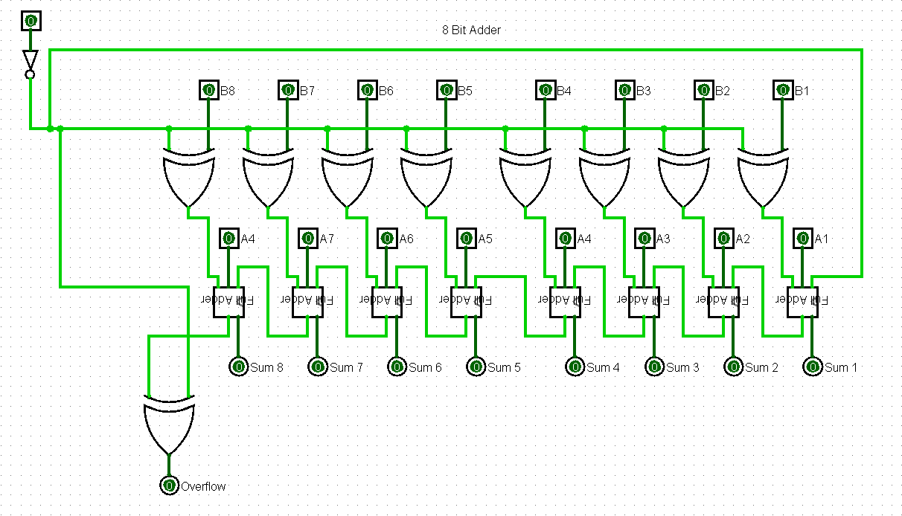
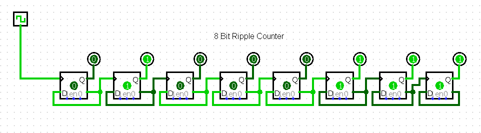

Code Answers
Home Page
Code: Hidden Language of Computer Hardware and Software Answers!
Chapter 11
- The four types of logic gates include: AND, OR, NAND, and NOR. The AND gate requires
two inputs in the closed position to power the output. An OR gate requires at least one of two inputs to be
closed for the output to power the output. NOR is a spin off of our OR gate that uses an inverter
to invert voltage, and only feeds power to the output when the input switches are open. NAND follows the same
idea but can feed power to the output as long as both switches aren't closed
Chapter 12
- A half adder consists of 8 relays jointed from an XOR gate and an AND gate, as well as 2 inputs, and 2 outputs.
- A full adder is made up of two half adders and an OR gate, with 18 relays total. The full adder however has 3 inputs, and 2 outputs.
- An 8-bit circuit contains a massive 17 inputs if you count the carry in, and 9 outputs if you include the carry out.
- 144 transistors!
Chapter 13
Half/Full Adder

8 Bit Adder

Chapter 14
8 Bit Ripple Counter
